reverse
c_sm4
打开程序是一个输入窗口 随机输入数值就给一串密文 应该是个加密程序，另一个文件给了密文 本质就是逆向加密过程.
拿到文件查壳 看到是upx但是命令行脱不掉 两个途径 第一是010改UPX然后即可正常脱壳 或者就是直接xdbg调试手脱。找到连续的几行push 把RIP调到第二个push（让RSP变红相当于压入栈）然后RSP上下断点
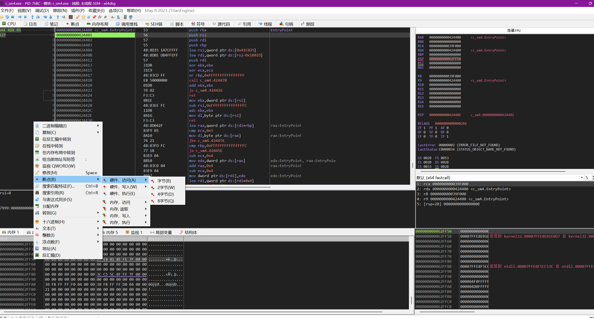
直接F9就到pop位置 再单步几行即可看到OEP
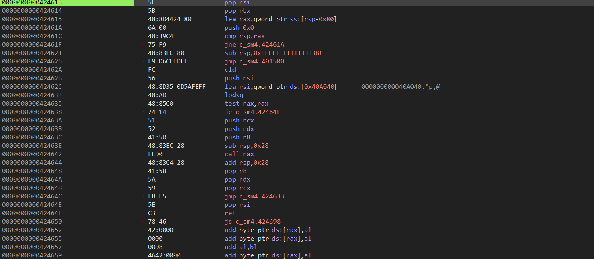
dump
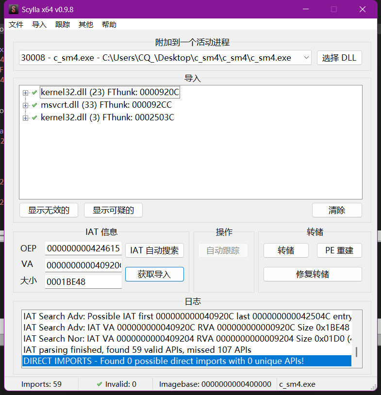
得到程序开始分析
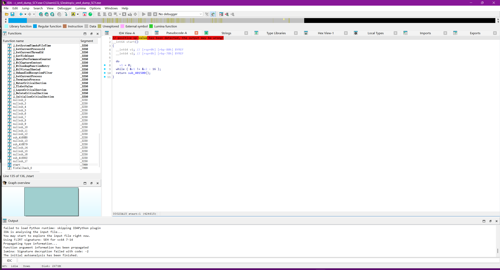
这个题目应该是魔改了SM4的FK
K0 = byteswap(key[0]) ^ 0xA3B1BAC7;
K1 = byteswap(key[1]) ^ 0x56AA3352;
K2 = byteswap(key[2]) ^ 0x677D919A;
K3 = byteswap(key[3]) ^ 0xB27022E0;
for i=0..31:
tmp = K[i+1] ^ K[i+2] ^ K[i+3] ^ CK[i];
K[i+4] = K[i] ^ sub_40171B(tmp);
rk[i] = K[i+4];
结合题的密文
SBOX = [
0xd6,0x90,0xe9,0xfe,0xcc,0xe1,0x3d,0xb7,0x16,0xb6,0x14,0xc2,0x28,0xfb,0x2c,0x05,
0x2b,0x67,0x9a,0x76,0x2a,0xbe,0x04,0xc3,0xaa,0x44,0x13,0x26,0x49,0x86,0x06,0x99,
0x9c,0x42,0x50,0xf4,0x91,0xef,0x98,0x7a,0x33,0x54,0x0b,0x43,0xed,0xcf,0xac,0x62,
0xe4,0xb3,0x1c,0xa9,0xc9,0x08,0xe8,0x95,0x80,0xdf,0x94,0xfa,0x75,0x8f,0x3f,0xa6,
0x47,0x07,0xa7,0xfc,0xf3,0x73,0x17,0xba,0x83,0x59,0x3c,0x19,0xe6,0x85,0x4f,0xa8,
0x68,0x6b,0x81,0xb2,0x71,0x64,0xda,0x8b,0xf8,0xeb,0x0f,0x4b,0x70,0x56,0x9d,0x35,
0x1e,0x24,0x0e,0x5e,0x63,0x58,0xd1,0xa2,0x25,0x22,0x7c,0x3b,0x01,0x21,0x78,0x87,
0xd4,0x00,0x46,0x57,0x9f,0xd3,0x27,0x52,0x4c,0x36,0x02,0xe7,0xa0,0xc4,0xc8,0x9e,
0xea,0xbf,0x8a,0xd2,0x40,0xc7,0x38,0xb5,0xa3,0xf7,0xf2,0xce,0xf9,0x61,0x15,0xa1,
0xe0,0xae,0x5d,0xa4,0x9b,0x34,0x1a,0x55,0xad,0x93,0x32,0x30,0xf5,0x8c,0xb1,0xe3,
0x1d,0xf6,0xe2,0x2e,0x82,0x66,0xca,0x60,0xc0,0x29,0x23,0xab,0x0d,0x53,0x4e,0x6f,
0xd5,0xdb,0x37,0x45,0xde,0xfd,0x8e,0x2f,0x03,0xff,0x6a,0x72,0x6d,0x6c,0x5b,0x51,
0x8d,0x1b,0xaf,0x92,0xbb,0xdd,0xbc,0x7f,0x11,0xd9,0x5c,0x41,0x1f,0x10,0x5a,0xd8,
0x0a,0xc1,0x31,0x88,0xa5,0xcd,0x7b,0xbd,0x2d,0x74,0xd0,0x12,0xb8,0xe5,0xb4,0xb0,
0x89,0x69,0x97,0x4a,0x0c,0x96,0x77,0x7e,0x65,0xb9,0xf1,0x09,0xc5,0x6e,0xc6,0x84,
0x18,0xf0,0x7d,0xec,0x3a,0xdc,0x4d,0x20,0x79,0xee,0x5f,0x3e,0xd7,0xcb,0x39,0x48
]
CK = [
0x00070e15,0x1c232a31,0x383f464d,0x545b6269,
0x70777e85,0x8c939aa1,0xa8afb6bd,0xc4cbd2d9,
0xe0e7eef5,0xfc030a11,0x181f262d,0x343b4249,
0x50575e65,0x6c737a81,0x888f969d,0xa4abb2b9,
0xc0c7ced5,0xdce3eaf1,0xf8ff060d,0x141b2229,
0x30373e45,0x4c535a61,0x686f767d,0x848b9299,
0xa0a7aeb5,0xbcc3cad1,0xd8dfe6ed,0xf4fb0209,
0x10171e25,0x2c333a41,0x484f565d,0x646b7279
]
FK_MOD = [0xA3B1BAC7, 0x56AA3352, 0x677D919A, 0xB27022E0]
def rotl(x, n):
return ((x << n) & 0xffffffff) | (x >> (32-n))
def tau(a):
b = 0
for i in range(4):
byte = (a >> (24-8*i)) & 0xff
b = (b << 8) | SBOX[byte]
return b
def L(b):
return b ^ rotl(b,2) ^ rotl(b,10) ^ rotl(b,18) ^ rotl(b,24)
def Lp(b):
return b ^ rotl(b,13) ^ rotl(b,23)
def T(x): # sub_4016FB
return L(tau(x))
def Tp(x): # sub_40171B
return Lp(tau(x))
def rk_gen(key16: bytes):
MK = [int.from_bytes(key16[i*4:(i+1)*4], 'big') for i in range(4)]
K = [MK[i] ^ FK_MOD[i] for i in range(4)]
rk=[]
for i in range(32):
tmp = K[i+1]^K[i+2]^K[i+3]^CK[i]
K.append(K[i] ^ Tp(tmp))
rk.append(K[i+4])
return rk
def sm4_block(block16: bytes, rk):
X=[int.from_bytes(block16[i*4:(i+1)*4],'big') for i in range(4)]
for i in range(32):
tmp = X[i+1]^X[i+2]^X[i+3]^rk[i]
X.append(X[i] ^ T(tmp))
return b''.join(X[35-j].to_bytes(4,'big') for j in range(4))
def pkcs7_unpad(data: bytes):
pad = data[-1]
return data[:-pad]
key = bytes.fromhex("0123456789abcdeffedcba9876543210")
ct = bytes.fromhex("e35d1c09d861670051587475dba013bfe253923f8571add70f63a674dbeb8f22")
rk = rk_gen(key)
# 解密：轮密钥逆序
pt = b''.join(sm4_block(ct[i:i+16], rk[::-1]) for i in range(0, len(ct), 16))
pt = pkcs7_unpad(pt)
print(pt.decode())
flag：unictf{sm4ezze44ms}
r_png
拿到文件 一个flagpngnec 一个enc 要找一个单字key 直接枚举0000到9999 用来打开图片
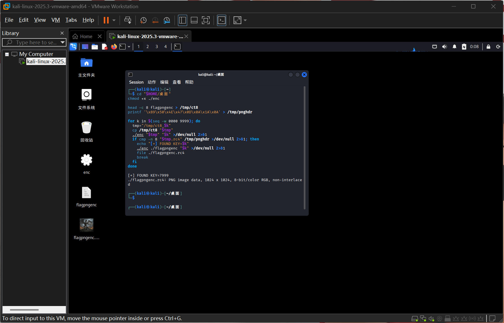
flag：
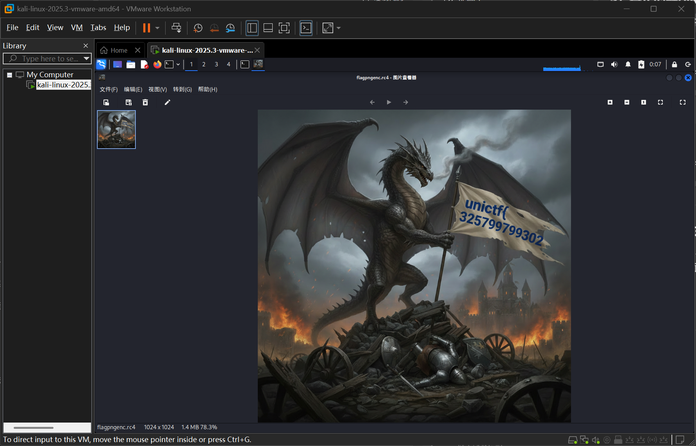
原神！启动！
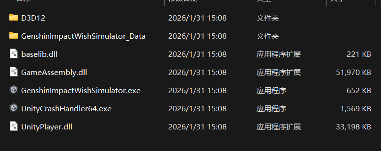
拿到这个题先玩游戏（）
欧克这是一个典型的 Unity IL2CPP ， 简单说：把你写的 C# 游戏逻辑，不再以 .NET IL（中间语言）形式运行，而是先转换成 C++，再编译成原生机器码（Windows 上通常就是 GameAssembly.dll）
运行 Il2CppDumper.exe 先选GameAssembly.dll 再选 global-metadata.dat
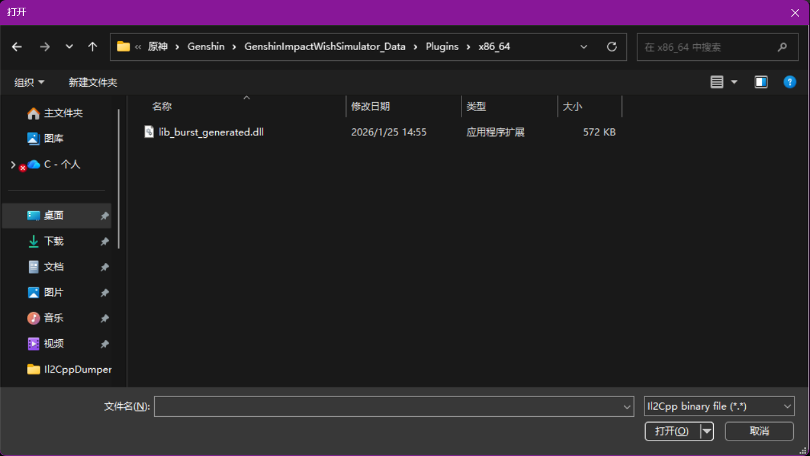
得到
Initializing metadata...
Metadata Version: 31
Initializing il2cpp file...
Il2Cpp Version: 31
Searching...
CodeRegistration : 1824ce2a0
MetadataRegistration : 182a507a0
Dumping...
Done!
Generate struct...
Done!
Generate dummy dll...得到dump.cs
exp：
from Crypto.Cipher import AES
from Crypto.Hash import MD5
from Crypto.Util.Padding import unpad
magic = 137
key = MD5.new(("GachaSalt_Never_Gonna_Give_You_Up" + str(magic)).encode("utf-8")).digest()
iv = MD5.new(("ZhongLi_Come_In_And11_" + str(magic)).encode("utf-8")).digest()
# 这里的 cipher_bytes 替换为 sharedassets0.assets 里 TextAsset(flag_data).m_Script 的 32 字节
cipher_bytes = bytes.fromhex("...") # 32 bytes
pt = unpad(AES.new(key, AES.MODE_CBC, iv).decrypt(cipher_bytes), 16)
print(pt.decode())
flag： UniCTF{St@rt_G3n541n_Impact!}
c_polynomial
int __fastcall main(int argc, const char **argv, const char **envp)
{
FILE *v3; // rax
FILE *v4; // rax
FILE *v5; // rax
__int64 v5_1; // rdx
_BYTE v9[26]; // [rsp+50h] [rbp-80h] BYREF
_BYTE v10[6]; // [rsp+6Ah] [rbp-66h] BYREF
_DWORD Src[4]; // [rsp+90h] [rbp-40h] BYREF
__int16 v12; // [rsp+A0h] [rbp-30h]
__int16 v13; // [rsp+A2h] [rbp-2Eh]
__int16 n44114; // [rsp+A4h] [rbp-2Ch]
__int16 v15; // [rsp+A6h] [rbp-2Ah]
__int16 v16; // [rsp+A8h] [rbp-28h]
unsigned __int8 v17; // [rsp+AFh] [rbp-21h]
__int64 v12_1; // [rsp+B0h] [rbp-20h]
_QWORD *p_v5; // [rsp+B8h] [rbp-18h]
int m; // [rsp+C0h] [rbp-10h]
int k; // [rsp+C4h] [rbp-Ch]
int j; // [rsp+C8h] [rbp-8h]
int i; // [rsp+CCh] [rbp-4h]
_main();
feclearexcept(63);
if ( fetestexcept(3) )
{
puts_0("Floating point exceptions are set, possibly being debugged.");
exit(1);
}
if ( IsDebuggerPresent() )
{
puts_0("This program is being debugged. Exiting!");
exit(1);
}
printf_0("I'm practicing my neuro math skills. Give me nine integers: ");
scanf(
"%d %d %d %d %d %d %d %d %d",
coeffs,
&dword_408044,
&dword_408048,
&dword_40804C,
&dword_408050,
&dword_408054,
&n44114,
&dword_40805C,
&dword_408060);
printf_0("Hmm, let me think");
v3 = __iob_func();
fflush_0(v3 + 1);
if ( IsDebuggerPresent() )
{
puts_0("This program is being debugged. Exiting!");
exit(1);
}
putchar_0(46);
v4 = __iob_func();
fflush_0(v4 + 1);
putchar_0(46);
v5 = __iob_func();
fflush_0(v5 + 1);
puts_0(".");
for ( i = -60; i <= 59; ++i )
{
total = 0;
power = 1;
for ( j = 0; j <= 8; ++j )
{
total += power * coeffs[j];
power *= i;
result = total;
}
::v12 = i + 37;
if ( (unsigned int)(i + 37) <= 0x36
&& (p_v5 = &::v5, v12_1 = (unsigned int)::v12, v5_1 = ::v5, (v17 = _bittest64(&v5_1, (unsigned int)::v12)) != 0) )
{
if ( IsDebuggerPresent() )
{
puts_0("This program is being debugged. Exiting!");
exit(1);
}
if ( result )
goto LABEL_19;
}
else if ( !result )
{
if ( IsDebuggerPresent() )
{
puts_0("This program is being debugged. Exiting!");
exit(1);
}
LABEL_19:
puts_0("Those aren't the right numbers. Try again!");
return 1;
}
}
if ( dword_408060 != 1 )
{
for ( k = 0; k <= 8; ++k )
coeffs[k] /= dword_408060;
}
if ( IsDebuggerPresent() )
{
puts_0("This program is being debugged. Exiting!");
exit(1);
}
if ( dword_40805C == -606 && n44114 == 44114 )
{
printf_0("Correct! Here's the flag: ");
Src[0] = coeffs[0];
Src[1] = dword_408044;
Src[2] = dword_408048;
Src[3] = dword_40804C;
v12 = dword_408050;
v13 = dword_408054;
n44114 = n44114;
v15 = dword_40805C;
v16 = dword_408060;
memcpy_0(v9, Src, sizeof(v9));
memcpy_0(v10, Src, 0x1Au);
for ( m = 0; m <= 51; ++m )
{
v9[m] ^= xorcode[m];
putchar_0((unsigned __int8)v9[m]);
}
putchar_0(10);
return 0;
}
else
{
printf_0("WRONG");
return 1;
}
}flag：unictf{19287189-291837918-knsadainwak-siadnwoadiasg}
Strange_Py
解包之后直接分析
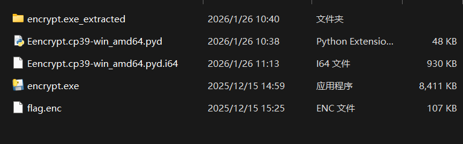
找到tea.pyc反编译
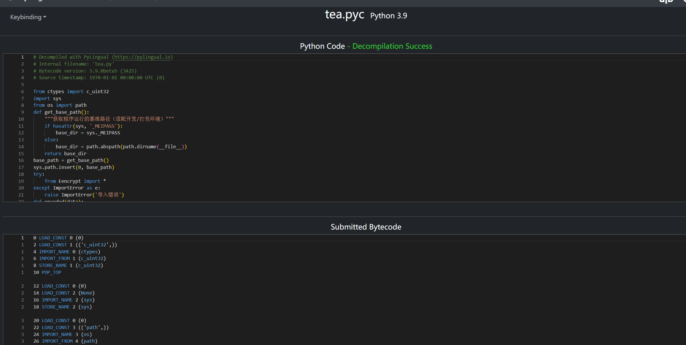
# Decompiled with PyLingual (https://pylingual.io)
# Internal filename: 'tea.py'
# Bytecode version: 3.9.0beta5 (3425)
# Source timestamp: 1970-01-01 00:00:00 UTC (0)
from ctypes import c_uint32
import sys
from os import path
def get_base_path():
"""获取程序运行的基准路径（适配开发/打包环境）"""
if hasattr(sys, '_MEIPASS'):
base_dir = sys._MEIPASS
else:
base_dir = path.abspath(path.dirname(__file__))
return base_dir
base_path = get_base_path()
sys.path.insert(0, base_path)
try:
from Eencrypt import *
except ImportError as e:
raise ImportError('导入错误')
def encoded(data):
data = refill(data)
data = [i for i in data]
rand = randint1(16)
k = bytes(rand)
key = join1(rand)
key = by(key)
bt = b''
for i in range(0, len(data), 8):
rand = randint1(8)
n2 = bytes(rand)
text = xor(data[i:i + 8], rand)
enc = [int(text[:len(text) // 2], 16), int(text[len(text) // 2:], 16)]
plaintext = []
for i in range(0, len(enc), 2):
cs = 50
vi = 305419896
v0 = c_uint32(enc[i])
v1 = c_uint32(enc[i + 1])
v = c_uint32(0)
for j in range(cs):
v.value = v.value - vi & 4294967295
temp_sum_v_v1 = v.value + v1.value & 4294967295
temp_key1_v1_shift = key[1] + (v1.value >> 5) & 4294967295
temp_key0_16v1 = key[0] + (v1.value << 4) & 4294967295
temp_v0_update = temp_sum_v_v1 ^ temp_key1_v1_shift ^ temp_key0_16v1
v0.value = v0.value + temp_v0_update & 4294967295
temp_sum_v_v0 = v.value + v0.value & 4294967295
temp_key3_v0_shift = key[3] - (v0.value >> 5) & 4294967295
temp_key2_16v0 = key[2] + (v0.value << 4) & 4294967295
temp_v1_update = temp_sum_v_v0 ^ temp_key3_v0_shift ^ temp_key2_16v0
v1.value = v1.value + temp_v1_update & 4294967295
enc[i] = v0.value
enc[i + 1] = v1.value
plaintext.extend([enc[i], enc[i + 1]])
plaintext = byte(join1(plaintext, 8))
bt = bt + bytes(plaintext) + n2
return encryption(bt, k)exp
#!/usr/bin/env python3
# -*- coding: utf-8 -*-
import re
from pathlib import Path
MASK = 0xFFFFFFFF
DELTA = 0x12345678
ROUNDS = 50
def tea_variant_decrypt(v0: int, v1: int, kwords: list[int]) -> tuple[int, int]:
"""
复盘 tea.pyc 里的变种 TEA 解密：
sum 初值 = (-DELTA * ROUNDS) mod 2^32
每轮：先逆 v1，再逆 v0，然后 sum += DELTA
"""
k0, k1, k2, k3 = kwords
sumv = (-DELTA * ROUNDS) & MASK
for _ in range(ROUNDS):
v1 = (v1 - (
((sumv + v0) & MASK) ^
((k3 - (v0 >> 5)) & MASK) ^
((k2 + ((v0 << 4) & MASK)) & MASK)
)) & MASK
v0 = (v0 - (
((sumv + v1) & MASK) ^
((k1 + (v1 >> 5)) & MASK) ^
((k0 + ((v1 << 4) & MASK)) & MASK)
)) & MASK
sumv = (sumv + DELTA) & MASK
return v0, v1
def split_flagenc(enc: bytes) -> tuple[bytes, bytes, bytes]:
"""
从你给出的 pyd 逻辑 sub_180002E80 可知：
encryption(bt, k) = (bt + k) + suffix
并且 suffix 长度为 13（文件总长 - 29 后 16 对齐验证）
"""
if len(enc) < 29:
raise ValueError("flag.enc too small")
bt = enc[:-29]
k = enc[-29:-13] # 16 bytes
suf = enc[-13:] # 13 bytes random suffix
if len(k) != 16 or len(suf) != 13:
raise ValueError("split failed")
if (len(bt) % 16) != 0:
raise ValueError(f"bt not aligned: {len(bt)} % 16 != 0")
return bt, k, suf
def decrypt_bt_to_stage2(bt: bytes, k: bytes) -> bytes:
"""
bt 每 16 字节：
[0:8] = cipher8 (v0||v1)
[8:16] = n2 (8 bytes)
解密得到 xored8，再 XOR n2 得到 plain8
"""
kwords = [int.from_bytes(k[i:i+4], "big") for i in range(0, 16, 4)]
out = bytearray()
for off in range(0, len(bt), 16):
blk = bt[off:off+16]
c8 = blk[:8]
n2 = blk[8:]
v0 = int.from_bytes(c8[:4], "big")
v1 = int.from_bytes(c8[4:], "big")
p0, p1 = tea_variant_decrypt(v0, v1, kwords)
xored = p0.to_bytes(4, "big") + p1.to_bytes(4, "big")
out.extend(a ^ b for a, b in zip(xored, n2))
return bytes(out)
def find_0x_tokens(stage2: bytes):
"""
找出形如 b"0xAB" 的 token 字符串，并记录它们在文件中的起始偏移。
我们只收集 ASCII 文本形式的 token（和二阶段 PE 里的实现一致）。
"""
tokens = []
for m in re.finditer(br"0x[0-9A-Fa-f]{2}", stage2):
s = m.group(0) # b"0xAB"
off = m.start()
val = int(s[2:], 16)
tokens.append((off, val, s))
return tokens
def best_pointer_run(stage2: bytes, token_offsets: set[int]) -> list[int]:
"""
复盘二阶段“指针表/索引表”：
常见实现：.data 里放一串 8-byte little-endian 指针，每个指向 .rdata 中某个 "0x??" 字符串。
我们做静态启发式：
- 扫描整个文件，按 8 字节对齐读取 u64
- 若 u64 恰好落在某个 token 的偏移（文件内偏移），则认为是“指针命中”
- 找“最长连续命中区”，把那段 u64 按顺序取出来作为输出顺序
"""
def u64le(b: bytes) -> int:
return int.from_bytes(b, "little", signed=False)
best = []
cur = []
# 允许某些编译器把表放在非 8 对齐处，所以这里不强制 off%8==0，直接滑动扫描
for off in range(0, len(stage2) - 8):
p = u64le(stage2[off:off+8])
if p in token_offsets:
cur.append(p)
else:
if len(cur) > len(best):
best = cur
cur = []
if len(cur) > len(best):
best = cur
return best
def extract_flag_from_stage2(stage2: bytes) -> str:
"""
1) 先找所有 "0x??" token
2) 再找最长“指针表命中区”
3) 按指针顺序把 token->byte 拼成 bytes
4) 在 bytes 里用正则找 Unictf{...} 或 unictf{...}
"""
toks = find_0x_tokens(stage2)
if not toks:
raise RuntimeError("no 0x?? tokens found in stage2")
token_offsets = {off for off, _, _ in toks}
off2val = {off: val for off, val, _ in toks}
ptr_run = best_pointer_run(stage2, token_offsets)
if len(ptr_run) < 10:
# 找不到表时，退而求其次：按出现顺序拼（但这题会错，所以仅保底）
raw = bytes(val for _, val, _ in toks)
else:
raw = bytes(off2val[p] for p in ptr_run)
# 在 raw 中找 flag
m = re.search(br"(?:Unictf|unictf|UNICTF)\{[^}]{1,200}\}", raw)
if not m:
# 有些实现会输出前后还有别的内容，直接尝试全量解码打印辅助排查
try:
s = raw.decode("ascii", errors="ignore")
except Exception:
s = repr(raw[:200])
raise RuntimeError("flag pattern not found; extracted bytes preview: " + s[:200])
return m.group(0).decode("ascii", errors="strict")
def main():
enc = Path("flag.enc").read_bytes()
bt, k, suf = split_flagenc(enc)
print("[+] len(flag.enc) =", len(enc))
print("[+] len(bt) =", len(bt), " len(k)=16 len(suffix)=13")
print("[+] k =", k.hex())
print("[+] suffix =", suf.hex())
stage2 = decrypt_bt_to_stage2(bt, k)
Path("stage2.bin").write_bytes(stage2)
# 强验证：二阶段应为 PE
if not stage2.startswith(b"MZ"):
raise RuntimeError("stage2 not PE (missing MZ). check endian/rounds/delta/split.")
flag = extract_flag_from_stage2(stage2)
print("[+] flag =", flag)
if __name__ == "__main__":
main()
flag：Unictf{W0OL!!!_Y0uh@Ve_fOuNd_mE}
r_zip
一看是个compress和一个zip 第一个应该就是他的打包过程
直接逆向了一下发现要在Linux打开
直接
./compress out1.z out.txt生成一个txt
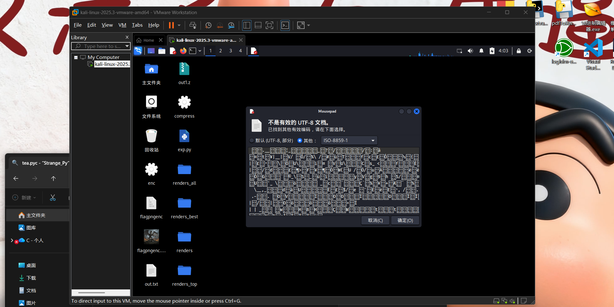
exp
#!/usr/bin/env python3
# -*- coding: utf-8 -*-
"""
Usage:
python3 exp2.py out.txt
python3 exp2.py out.txt --thr 127 --wmin 50 --wmax 200
python3 exp2.py out.txt --thr 127 --inv
Output:
./renders/out_<W>.png
"""
from __future__ import annotations
import argparse
from pathlib import Path
from PIL import Image
def render_fast(data: bytes, width: int, threshold: int, invert: bool) -> Image.Image:
"""
1 byte = 1 pixel
b > threshold => black (0), else white (255)
invert=True 会翻转黑白
"""
n = len(data)
height = (n + width - 1) // width
# 先把画布全设成白
pixels = bytearray([255]) * (width * height)
# 只遍历实际数据长度，把需要变黑的位置改成 0
if not invert:
for idx, b in enumerate(data):
if b > threshold:
pixels[idx] = 0
else:
for idx, b in enumerate(data):
if b <= threshold:
pixels[idx] = 0
# 一次性构建灰度图
img = Image.frombytes("L", (width, height), bytes(pixels))
return img
def main():
ap = argparse.ArgumentParser()
ap.add_argument("infile", help="input file (e.g., out.txt)")
ap.add_argument("--outdir", default="renders", help="output directory (default: renders)")
ap.add_argument("--thr", type=int, default=0, help="threshold (default: 0)")
ap.add_argument("--wmin", type=int, default=50, help="min width (default: 50)")
ap.add_argument("--wmax", type=int, default=200, help="max width (default: 200)")
ap.add_argument("--inv", action="store_true", help="invert black/white rule")
args = ap.parse_args()
data = Path(args.infile).read_bytes()
outdir = Path(args.outdir)
outdir.mkdir(parents=True, exist_ok=True)
for w in range(args.wmin, args.wmax + 1):
img = render_fast(data, width=w, threshold=args.thr, invert=args.inv)
img.save(outdir / f"out_{w}.png")
print(f"[+] Done. Check ./{outdir}/out_*.png")
if __name__ == "__main__":
main()
flag（小写）
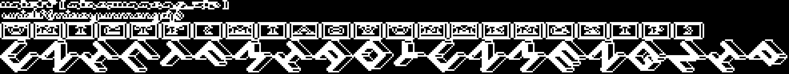
是人类吗？
很明显的一道wasm逆向
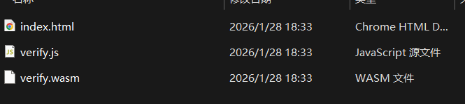
index.html：采集鼠标轨迹，调用 wasm 验证verify.js：Emscripten 胶水，负责加载verify.wasm并导出函数verify.wasm：核心校验逻辑（真正的逆向点）
- 前端
index.html采集鼠标轨迹，点击 VERIFY 后调用Module.ccall('verify_human')，并用返回字符串是否startsWith("UniCTF")来显示绿/红。 verify.js确认加载verify.wasm且导出verify_human，核心逻辑在 wasm。- 逆向
verify.wasm：DATA 段含 46 字节密文，紧跟报错字符串Error: Data too short.。 - 反汇编
verify_human：轨迹 → 4 个 16-bit 特征 → 64-bit seed；再用 LCG 常数6364136223846793005/1442695040888963407，每轮取seed>>56做 XOR 解密 46B。 - 利用题目暗示 “w0+w1+w2+w3 不大”，枚举
S=165的所有组合爆破 seed，筛出以UniCTF{开头的可打印明文。 - 按规则对
plain + S做 MD5，得到最终 flag
#!/usr/bin/env python3
# -*- coding: utf-8 -*-
"""
UniCTF verify.wasm solver (self-contained)
What it does:
1) Parse WASM section 11 (DATA) and extract the first active data segment bytes.
2) Take the first 46 bytes as cipher.
3) Brute-force 64-bit seed packed from four 16-bit words (w0..w3), constrained by w0+w1+w2+w3 = S
- You can either fix S (e.g. 165), or scan a range of S.
4) Decrypt with LCG keystream (A,C) and XOR.
5) Validate plaintext (printable + starts with "UniCTF{").
6) Compute final flag: UniCTF{ md5( plaintext + str(S) ) }.
Usage:
python solve_verify_wasm.py verify.wasm --sum 165
python solve_verify_wasm.py verify.wasm --scan 0 250
"""
from __future__ import annotations
import argparse
from pathlib import Path
from hashlib import md5
A = 6364136223846793005
C = 1442695040888963407
MASK = (1 << 64) - 1
CIPHER_LEN = 46
PREFIX = b"UniCTF{"
def read_uleb(buf: bytes, i: int) -> tuple[int, int]:
"""Read unsigned LEB128 integer from buf starting at i. Return (value, new_i)."""
r = 0
shift = 0
while True:
if i >= len(buf):
raise ValueError("ULEB read past end of buffer")
b = buf[i]
i += 1
r |= (b & 0x7F) << shift
if (b & 0x80) == 0:
return r, i
shift += 7
if shift > 63:
raise ValueError("ULEB too large / malformed")
def extract_cipher_from_wasm(wasm_path: str, expected_offset: int | None = 1024) -> tuple[bytes, int]:
"""
Return (cipher_bytes, data_segment_offset).
We parse section 11 (DATA), take the first segment with flags==0 (active, memidx=0 implicit).
"""
data = Path(wasm_path).read_bytes()
if len(data) < 8 or data[:4] != b"\x00asm":
raise RuntimeError("Not a valid wasm file (missing magic header)")
# Sections start after 8-byte header: magic(4) + version(4)
i = 8
data_sec = None
while i < len(data):
sid = data[i]
i += 1
size, i = read_uleb(data, i)
if i + size > len(data):
raise RuntimeError("Malformed section size (runs past EOF)")
sec = data[i:i + size]
i += size
if sid == 11: # DATA
data_sec = sec
break
if data_sec is None:
raise RuntimeError("DATA section (id=11) not found")
j = 0
seg_cnt, j = read_uleb(data_sec, j)
if seg_cnt < 1:
raise RuntimeError("No data segments found")
# Parse segments until we find an active segment with flags==0.
for seg_index in range(seg_cnt):
flags, j = read_uleb(data_sec, j)
if flags != 0:
# Other modes exist (passive / active with memidx), skip them cleanly.
# For flags==1: passive (no init expr)
# For flags==2: active with explicit memidx
# For flags==3: declarative (bulk memory)
if flags == 1:
# passive: just size + bytes
size, j = read_uleb(data_sec, j)
j += size
continue
elif flags == 2:
memidx, j = read_uleb(data_sec, j)
# init expr: ... end
# We only skip; still need to parse init expr properly.
# init expr for i32.const off end:
if data_sec[j] != 0x41:
raise RuntimeError("Unexpected init expr opcode in flags==2 segment")
j += 1
_, j = read_uleb(data_sec, j)
if data_sec[j] != 0x0B:
raise RuntimeError("Unexpected init expr terminator in flags==2 segment")
j += 1
size, j = read_uleb(data_sec, j)
j += size
continue
else:
# For simplicity, bail; most CTFs only use flags==0 active segment.
raise RuntimeError(f"Unsupported data segment flags={flags} at segment {seg_index}")
# flags == 0 (active, memidx=0 implicit), parse init expr: i32.const <off> end
if data_sec[j] != 0x41:
raise RuntimeError("Unexpected init expr opcode (expected i32.const)")
j += 1
off, j = read_uleb(data_sec, j)
if data_sec[j] != 0x0B:
raise RuntimeError("Unexpected init expr terminator (expected 0x0B)")
j += 1
size, j = read_uleb(data_sec, j)
seg_bytes = data_sec[j:j + size]
if len(seg_bytes) < CIPHER_LEN:
raise RuntimeError(f"Data segment too short: {len(seg_bytes)} bytes (need at least {CIPHER_LEN})")
cipher = seg_bytes[:CIPHER_LEN]
if expected_offset is not None and off != expected_offset:
# Not fatal, but helpful for debugging
print(f"[!] Note: data segment offset is {off}, expected {expected_offset}")
return cipher, off
raise RuntimeError("No suitable active data segment with flags==0 found")
def decrypt_lcg_xor(cipher: bytes, seed: int) -> bytes:
"""LCG state update; keystream is top byte of state; plaintext = cipher XOR keystream."""
s = seed & MASK
out = bytearray(len(cipher))
for idx, b in enumerate(cipher):
s = (s * A + C) & MASK
k = (s >> 56) & 0xFF
out[idx] = b ^ k
return bytes(out)
def is_printable_ascii(bs: bytes) -> bool:
return all(32 <= b < 127 for b in bs)
def iter_w_quads_for_sum(S: int):
"""Generate all (w0,w1,w2,w3) with nonnegative ints and sum==S."""
for w0 in range(S + 1):
rem1 = S - w0
for w1 in range(rem1 + 1):
rem2 = rem1 - w1
for w2 in range(rem2 + 1):
w3 = rem2 - w2
yield w0, w1, w2, w3
def pack_seed(w0: int, w1: int, w2: int, w3: int) -> int:
"""Pack 4x16-bit words into 64-bit seed: (w3<<48)|(w2<<32)|(w1<<16)|w0."""
if any(x < 0 or x > 0xFFFF for x in (w0, w1, w2, w3)):
raise ValueError("w0..w3 must fit in 16 bits")
return (w3 << 48) | (w2 << 32) | (w1 << 16) | w0
def try_sum(cipher: bytes, S: int) -> tuple[int,int,int,int,bytes] | None:
"""Return (w0,w1,w2,w3,plaintext_bytes) if found, else None."""
for w0, w1, w2, w3 in iter_w_quads_for_sum(S):
seed = pack_seed(w0, w1, w2, w3)
pt = decrypt_lcg_xor(cipher, seed)
if pt.startswith(PREFIX) and is_printable_ascii(pt):
return w0, w1, w2, w3, pt
return None
def compute_flag(plaintext: str, S: int) -> str:
digest = md5((plaintext + str(S)).encode("utf-8")).hexdigest()
return f"UniCTF{{{digest}}}"
def main():
ap = argparse.ArgumentParser(description="Solve UniCTF verify.wasm by extracting cipher and brute-forcing seed.")
ap.add_argument("wasm", help="Path to verify.wasm")
group = ap.add_mutually_exclusive_group(required=True)
group.add_argument("--sum", type=int, help="Fix S = w0+w1+w2+w3 to a specific value (e.g. 165)")
group.add_argument("--scan", nargs=2, type=int, metavar=("S_MIN", "S_MAX"),
help="Scan sums in [S_MIN, S_MAX] inclusive (e.g. 0 250)")
ap.add_argument("--offset", type=int, default=1024,
help="Expected data segment offset (default: 1024). Set to -1 to disable check.")
args = ap.parse_args()
expected_offset = None if args.offset < 0 else args.offset
cipher, off = extract_cipher_from_wasm(args.wasm, expected_offset=expected_offset)
print(f"[+] Extracted cipher: {len(cipher)} bytes (data segment offset={off})")
if args.sum is not None:
S = args.sum
print(f"[+] Brute-forcing with fixed sum S={S} ...")
hit = try_sum(cipher, S)
if not hit:
print("[-] Not found for this sum.")
raise SystemExit(1)
w0, w1, w2, w3, pt = hit
plain = pt.decode("ascii", errors="strict")
print("[+] Decrypted plaintext:", plain)
print(f"[+] Found features: w0={w0}, w1={w1}, w2={w2}, w3={w3} (sum={S})")
print("[+] Final flag:", compute_flag(plain, S))
return
smin, smax = args.scan
if smin > smax:
smin, smax = smax, smin
print(f"[+] Scanning sums S in [{smin}, {smax}] ...")
for S in range(smin, smax + 1):
hit = try_sum(cipher, S)
if hit:
w0, w1, w2, w3, pt = hit
plain = pt.decode("ascii", errors="strict")
print(f"[+] HIT at S={S}!")
print("[+] Decrypted plaintext:", plain)
print(f"[+] Found features: w0={w0}, w1={w1}, w2={w2}, w3={w3} (sum={S})")
print("[+] Final flag:", compute_flag(plain, S))
return
print("[-] No solution found in scanned sum range.")
raise SystemExit(2)
if __name__ == "__main__":
main()
得到flag：UniCTF{Hum4n_Err0r_1s_The_Tru3_P4ssw0rd_8x92a}